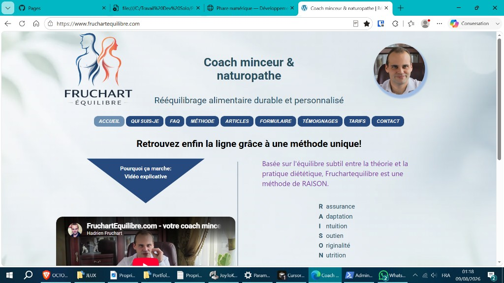
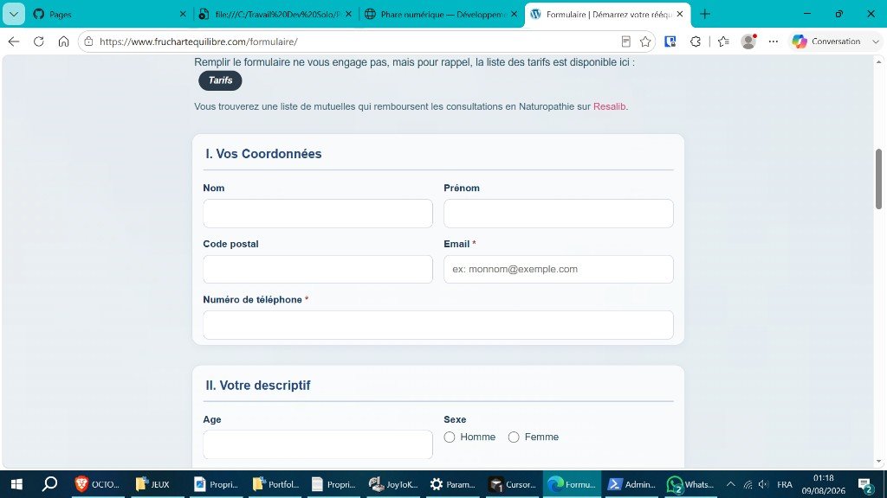
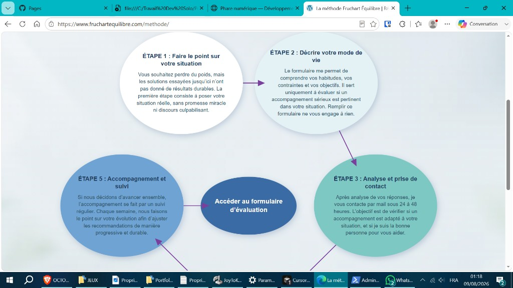
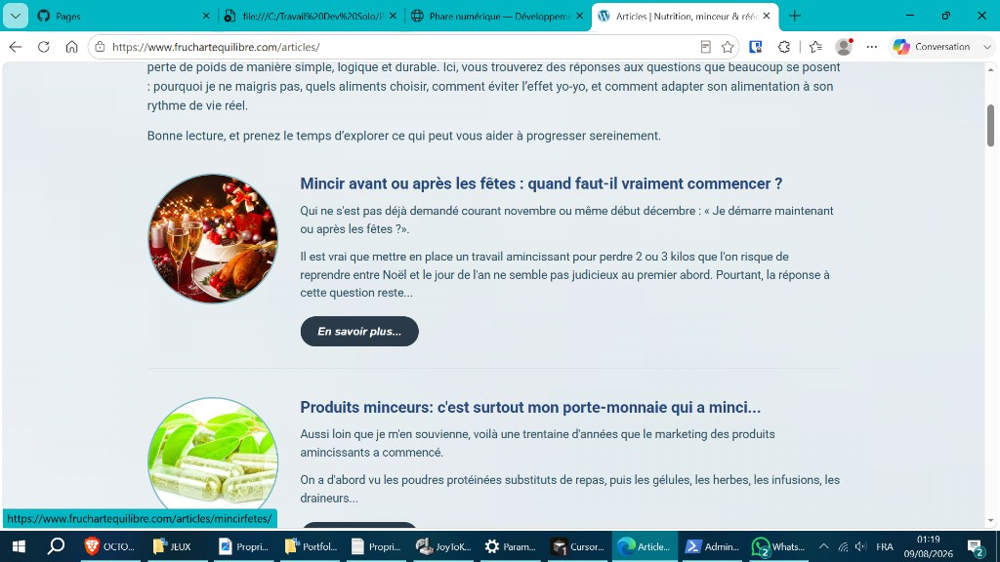

← Travaux · Site WordPress métier
Fruchart Équilibre
Migration complète depuis Wix — refonte, codage PHP (mu-plugins), formulaires sur mesure et mise en production chez o2switch avec envoi SMTP fiable.

Captures
Un site complet en production



Le chantier (en clair)
Fruchart Équilibre, c'est le site d'un coach minceur & naturopathe : méthode RAISON, vidéo explicative, articles, témoignages, tarifs et formulaire d'évaluation. Tout partait de Wix — il fallait repartir sur une base saine, avec du code propre à nous.
Refonte totale : structure WordPress + Elementor pour la mise en page, avec le cœur technique codé en dur (menu mobile escalier, formulaires, SEO).
Ce que j'ai livré
- Migration contenu — reprise fidèle page par page depuis le live Wix (textes intégraux)
- Code métier en PHP — styles et scripts toujours actifs, indépendants d'Elementor
- Menu mobile escalier — déploiement diagonal, animation séquentielle
- Formulaire d'évaluation — validation et envoi par e-mail en production
- Témoignages — module dédié, envoi et affichage structuré
- SEO — titres, meta, Schema.org par page
- Production o2switch — déploiement, SSL, formulaires opérationnels
Mise en production
Site en ligne chez o2switch avec SSL. Les formulaires (évaluation et témoignages) passent par la boîte contact@fruchartequilibre.com — envoi SMTP de l'hébergeur, messages reçus en production.
← Retour aux travaux